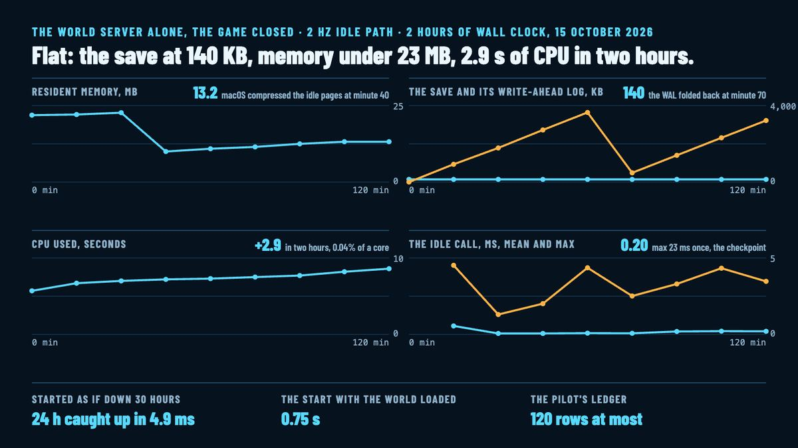

The idle soak: what the world does while nobody is on line
The world runs on when you close the game. For a long game that has to be cheap: a server that sits for days, with nobody on line, and neither grows nor slows. Today it was measured. The world server served a played save for two hours of wall clock with no client at all, at its 2 Hz idle pace, and a second run started it as if it had been down 30 hours. The numbers are the post; there are no pictures.

The soak
The save is a world with some life in it: a pilot's rig, two mining mercenaries and a guard, the Beacon project under way, The Fork held, the pilot off line with a ledger waiting, and the five frontier pilots landed. The server ran it at low priority on the development Mac, under a load of about 11 from the other worktrees' builds, and wrote a line every five minutes: memory, CPU, the save and its write-ahead log, the log file, the idle call's mean and worst, the ledger's rows.
| Minute | Resident MB | CPU s | Save KB | WAL KB | Log KB | Idle call mean / max ms | Ledger rows |
|---|---|---|---|---|---|---|---|
| 0 | 21.9 | 5.7 | 140 | 0 | 1.2 | 2 | |
| 15 | 22.1 | 6.7 | 140 | 929 | 1.6 | 0.55 / 4.52 | 9 |
| 30 | 22.7 | 7.0 | 140 | 1,786 | 2.0 | 0.06 / 1.30 | 10 |
| 45 | 10.0 | 7.2 | 140 | 2,728 | 2.8 | 0.06 / 2.01 | 11 |
| 60 | 10.9 | 7.3 | 140 | 3,645 | 3.4 | 0.08 / 4.36 | 11 |
| 75 | 11.5 | 7.5 | 140 | 483 | 3.9 | 0.07 / 2.51 | 11 |
| 90 | 12.5 | 7.7 | 140 | 1,400 | 4.5 | 0.19 / 3.30 | 11 |
| 105 | 13.2 | 8.2 | 140 | 2,318 | 5.1 | 0.21 / 4.33 | 11 |
| 120 | 13.2 | 8.6 | 140 | 3,223 | 5.5 | 0.20 / 3.47 | 11 |
Flat, read in words. The save stays at 140 KB. The write-ahead log grows and folds back under 4 MB, because SQLite checkpoints it at a thousand pages; that fold is the 23 ms save at minute 70, the worst idle call of the run. Resident memory stays under 23 MB, and from minute 40 macOS compressed the idle pages down to 10 to 13 MB. The CPU used is 2.9 seconds in two hours, about 0.04% of a core. The idle call's mean sits between 0.05 and 0.57 ms. The log grows 2.2 KB an hour. Past the two hours, the same save idled 36 world days in the server's half-second calls, and on the scarce world from the previous post the idle call's mean held at 0.065 ms flat with the save at 120 KB.
Down 30 hours
The second run served the save for a minute, then started it as if the server had been down 30 hours. The world's clock moved 24 hours, which is the cap, in 4.9 ms, and the start took 0.75 seconds with the world loaded. The three mercenaries delivered at most a day's work each, less in fact because their fields ran out. The frontier pilots booked nothing: their deeds happen only while the server runs, and the gap is caught up for the mercenaries, not for them. The five realm weeks that ended in the gap were told once each, and the ledger went from 9 to 11 rows.
The ledger has a bound now. It keeps 120 rows at most, and past that the routine rows go first, the frontier's deeds and the weeks, so a canyon you held or what your mercenaries delivered stays in the report you read when you come back.
What the soak fixed
Three leaks, each small, each the kind that only shows when nothing else is happening. An empty realm week, one nobody hauled in, was adding a ledger row every 4 hours and 40 minutes of wall clock, and those rows were evicting the mercenaries' deliveries past the cap; the empty weeks are one row now, its time the last. The idle saves came every 5 seconds and wrote the write-ahead log at 10 KB a second; they come every 60 seconds now, 1 KB a second, and a crash while idle loses a minute at most. And the server's log file was never cut: past 8 MB at start it moves aside. The idle path got its own timing line too, every five minutes, and the catch-up line says how long it took. Each fix has a test except the save interval, which the soak's WAL column measures.
This is M10's last post. The milestone is complete, and the work pauses here.